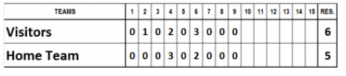
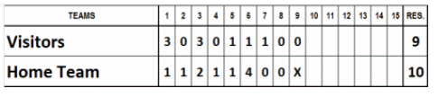
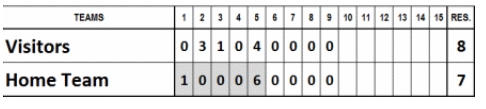
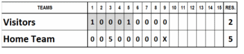
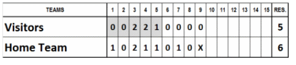
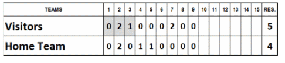
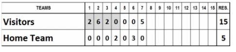
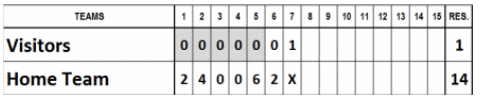
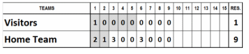
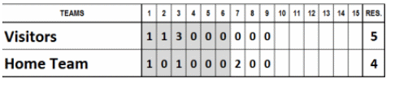

Un point de la victoire est un point qui donne l'avantage à une équipe.
Avant d'examiner quelques exemples, il convient de noter qu'au moment précis où une équipe revient à égalité, c'est comme si un nouveau match commençait pour déterminer le point de la victoire.
Le point de la victoire est également celui qui désigne le lanceur perdant de la rencontre.
Exemple 48: Match remporté par l'équipe qui reçoit sur le score de 5 à 4. La feuille de match montre que l'équipe qui reçoit a conservé l'avantage dès la première manche.
Le point de la victoire est donc le premier point marqué lors de la première manche.
Exemple 49: Match remporté 6-5 par l'équipe visiteuse. L'analyse du score révèle que la cinquième manche s'est achevée sur une égalité (3 partout). Lors de la première moitié de la manche suivante, les visiteurs ont inscrit le premier point pour prendre l'avantage (4 à 3) et ont creusé l'écart en marquant deux points supplémentaires (6 à 3), tandis que leurs adversaires n'ont réussi qu'à réduire l'écart en inscrivant les deux derniers points de la manche.

Le point de la victoire est donc le premier des trois points inscrits par l'équipe visiteuse lors de la sixième manche.
Exemple 50: Match remporté par l'équipe visiteuse sur le score de 9 à 8. Les visiteurs ont conclu leur première manche à la batte avec neuf points. Malgré un point inscrit lors de chacune des manches suivantes, l'équipe locale n'a pas réussi à combler son retard et a perdu la rencontre.

Le point de la victoire est celui qui a donné l'avantage à l'équipe visiteuse ; dans ce cas précis, il s'agissait du premier point de la rencontre.
Exemple 51: Match remporté 10-9 par l'équipe locale. À la fin de la première moitié de la sixième manche, le score était de 8 à 6 en faveur des visiteurs. Le tournant décisif a eu lieu lors de la seconde moitié de cette même manche, lorsque l'équipe locale a inscrit quatre points pour prendre l'avantage (10 à 8), une avance qu'elle a conservée jusqu'à la fin de la rencontre.

Le point de la victoire est l'un des quatre inscrits par l'équipe gagnante lors de la sixième manche. Ainsi, grâce au premier point, l'équipe locale a commencé à réduire l'écart (7 à 8) ; avec le deuxième, elle a égalisé (8 partout) ; avec le troisième, elle a pris l'avantage (9 à 8) et, avec le dernier, elle a creusé davantage l'écart (10 à 8). Le point de la victoire était donc le troisième de cette série.
Exemple 52: Match remporté par l'équipe locale sur le score de 11 à 9. À l'issue de la septième manche, le score était de 4 à 6 en faveur de l'équipe locale. Toutefois, les visiteurs ont inscrit trois points lors de la manche suivante pour prendre l'avantage (7 à 6). Si le match s'était arrêté là, le point de la victoire aurait été le dernier de cette série de trois, soit le septième point. Cependant, l'équipe passant à la batte en second a terminé la manche en inscrivant cinq points supplémentaires (7 à 11), rendant toute remontée impossible pour ses adversaires. En observant l'évolution du score durant la huitième manche, on constate que l'équipe locale a égalisé grâce au premier de ces cinq points (7 partout), a pris l'avantage avec le deuxième (8 à 7) et a creusé l'écart avec les trois suivants. Leurs adversaires n'ont réussi à marquer que deux points, portant le score final à 9 à 11 en leur défaveur.

Le point de la victoire est donc le deuxième point marqué par l'équipe locale lors de la huitième manche.
Exemple 53: Match remporté par l'équipe visiteuse sur le score de 12 à 11. Si l'on examine les scores intermédiaires à la fin de chaque manche, on comprend aisément comment le point de la victoire peut varier en fonction des points inscrits par les équipes et des fluctuations du score.

Première manche (0-1) : Le premier point décisif est celui qui donne l'avantage à l'équipe locale.
Deuxième manche (1-1) : Le point qui donnait précédemment la victoire est annulé lorsque l'équipe visiteuse revient à égalité.
Troisième manche (3-2) : L'équipe visiteuse inscrit le premier point de la manche et prend l'avantage (2-1). Elle accroît ensuite son avance avec un deuxième point (3-1). Ses adversaires marquent un point supplémentaire (3-2). Le point de la victoire est donc celui qui a permis aux visiteurs de mener 2-1.
Quatrième manche (3-4) : Alors que l'équipe visiteuse ne marque aucun point lors de son passage au bâton, l'équipe locale en inscrit deux. Le premier lui permet d'égaliser (3-3) et le second lui donne l'avantage (3-4). Ce dernier point devient donc celui de la victoire.
Cinquième manche (6-4) : l'équipe visiteuse inscrit trois points, le deuxième lui redonnant l'avantage. Le nouveau point de la victoire est le deuxième de cette manche.
Sixième manche (7-4) : l'équipe visiteuse marque un point et l'équipe locale aucun.
Septième manche (7-5) : Alors qu'elle était sur le point de perdre, l'équipe locale marque. Aucun changement concernant le point de la victoire inscrit lors des cinquième et sixième manches.
Huitième manche (8-10) : L'équipe visiteuse inscrit un point, creusant ainsi l'écart (8-5). L'équipe locale réagit en marquant cinq points, renversant le score intermédiaire. Si le troisième point a permis d'égaliser (8-8), le quatrième a donné l'avantage à l'équipe, constituant ainsi le point de la victoire.
Neuvième manche (12-11) : Les visiteurs reviennent à égalité en marquant deux points (10-10), prennent l'avantage grâce à un troisième point et consolident leur avance avec un quatrième. Lors de la phase d'attaque de l'équipe locale, ils gèrent habilement l'avantage acquis grâce à ce troisième point et ne concèdent qu'un seul point.
Le point de la victoire est donc le troisième point inscrit par l'équipe visiteuse lors de la neuvième manche.
Maintenant que nous savons comment identifier le point de la victoire, il est possible de déterminer quel lanceur doit être crédité de la victoire lorsqu'une équipe en utilise plusieurs ; il est conseillé de procéder comme suit :
Équipe gagnante: déterminer qui est le VAINQUEUR et si un SAUVEGARDE est applicable.
Équipe perdante : Déterminer quel lanceur est responsable du point qui donne à l'équipe victorieuse une avance qu'elle ne perdra plus (il s'agit du point de la victoire).
IMPORTANT: Chaque lanceur ne peut se voir créditer que d'une seule statistique, même s'il est intervenu à plusieurs reprises au cours du même match.
Dans les exemples suivants, les couleurs figurant dans les tableaux servent uniquement à mettre en évidence la manche lancée par chaque lanceur et ne doivent pas être utilisées sur la feuille de marque officielle.
Exemple 54: Lors d'un match de baseball remporté 4 à 1 par l'équipe locale, sans remplacement de lanceur de la part de l'une ou l'autre équipe, le lanceur de l'équipe locale sera le lanceur gagnant et celui de l'équipe visiteuse sera le lanceur perdant.

Exemple 55: Lors d'un match de baseball remporté 8 à 7 par l'équipe visiteuse, avec les scores indiqués dans le tableau, le lanceur partant de l'équipe visiteuse est remplacé par un lanceur de relève au début de la seconde moitié de la sixième manche.

Les lanceurs se voient attribuer les statistiques suivantes :
Gagnant: le lanceur partant de l'équipe visiteuse a lancé cinq manches ; son équipe menait au moment de son remplacement et a conservé l'avantage jusqu'à la fin..
Sauvegarde: le lanceur de relève de l'équipe visiteuse, qui a terminé le match, a permis à son équipe de conserver l'avantage et a lancé pendant quatre manches.
Perdant: Le seul lanceur de l'équipe locale est le lanceur perdant.
Exemple 56: Lors d'un match de baseball remporté 16 à 7 par l'équipe locale, avec les scores indiqués dans le tableau, le lanceur partant de l'équipe locale est remplacé par un lanceur de relève au début de la sixième manche.

Les lanceurs se voient attribuer les statistiques suivantes :
Gagnant: Le lanceur partant de l'équipe visiteuse a lancé cinq manches ; son équipe était en tête lorsqu'il a été remplacé et a conservé l'avantage jusqu'à la fin.
Sauvegarde: le lanceur de relève de l'équipe locale, qui a conclu le match, a permis à son équipe de conserver l'avantage et a lancé pendant quatre manches.
Perdant: Le seul lanceur de l'équipe visiteuse est le lanceur perdant.
Exemple 57: Lors d'un match de baseball remporté 5 à 2 par l'équipe locale, avec les scores indiqués dans le tableau, le lanceur partant de l'équipe locale a été remplacé par un lanceur de relève au début de la sixième manche.

Les lanceurs se voient attribuer les statistiques suivantes :
Gagnant: Le lanceur partant de l'équipe locale a lancé cinq manches ; son équipe était en tête lorsqu'il a été remplacé et a conservé l'avantage jusqu'à la fin.
Sauvegarde: le lanceur de relève de l'équipe locale, qui a conclu le match, a permis à son équipe de conserver l'avantage et a lancé pendant quatre manches.
Perdant: Le seul lanceur de l'équipe visiteuse est le lanceur perdant.
Exemple 58: Lors d'un match de baseball remporté 6 à 5 par l'équipe locale, avec les scores indiqués dans le tableau, le lanceur de l'équipe locale a été remplacé par un lanceur de relève au début de la sixième manche.

Les lanceurs se voient attribuer les statistiques suivantes :
Gagnant: le lanceur de relève de l'équipe locale, qui a terminé le match ; avec lui au monticule, son équipe a pris l'avantage et a fini par remporter la rencontre.
Perdant: Le seul lanceur de l'équipe visiteuse est le lanceur perdant.
Dans ce cas, aucun sauvetage ne peut être attribué, car le lanceur de relève est le dernier à lancer et a déjà été désigné comme le lanceur vainqueur.
Exemple 59: Lors d'un match de baseball remporté 5 à 4 par l'équipe visiteuse, avec les scores indiqués dans le tableau, le lanceur partant de l'équipe locale a été remplacé par un lanceur de relève au début de la quatrième manche.

Les lanceurs se voient attribuer les statistiques suivantes :
Gagnant: the only pitcher of the visiting team is the winning pitcher.
Perdant: Le point de la victoire est le deuxième point inscrit par l'équipe visiteuse lors de la septième manche. C'est le lanceur de relève de l'équipe locale qui était sur le monticule lorsque l'équipe adverse a pris l'avantage, qu'elle a ensuite conservé et il est crédité de la défaite.
Exemple 60: Lors d'un match de baseball remporté 15 à 5 par l'équipe visiteuse, avec les scores indiqués dans le tableau, le lanceur partant de l'équipe locale a été remplacé par un lanceur de relève au début de la cinquième manche.

Les lanceurs se voient attribuer les statistiques suivantes :
Gagnant: Le seul lanceur de l'équipe visiteuse est le lanceur gagnant.
Perdant: Le point de la victoire est le premier point inscrit par l'équipe visiteuse lors de la première manche. Le lanceur partant de l'équipe locale est le lanceur perdant, car son équipe était menée au score au moment de son remplacement et l'est restée jusqu'à la fin du match.
Exemple 61: Lors d'un match de baseball remporté 14 à 1 par l'équipe locale rencontre régie par la règle de l'écart de points et dont les scores figurent dans le tableau, le lanceur partant de l'équipe locale a été remplacé par un lanceur de relève au début de la sixième manche.

Les lanceurs se voient attribuer les statistiques suivantes :
Gagnant: Le lanceur partant de l'équipe locale a lancé cinq manches ; son équipe était en tête lorsqu'il a été remplacé et a conservé l'avantage jusqu'à la fin.
Perdant: Le seul lanceur de l'équipe visiteuse est le lanceur perdant.
Dans ce cas, il n'y a pas de sauvetage, car le lanceur de relève n'a lancé que deux manches alors que son équipe possédait déjà une avance de 12 points.
Exemple 62: Lors d'un match de baseball remporté 12 à 2 par l'équipe visiteuse, avec les scores indiqués dans le tableau, le lanceur partant de l'équipe locale a été remplacé par un lanceur de relève au début de la troisième manche. Le lanceur partant de l'équipe visiteuse a été remplacé par un lanceur de relève au début de la seconde moitié de la quatrième manche.

Les lanceurs se voient attribuer les statistiques suivantes :
Gagnant: le lanceur de relève de l'équipe visiteuse, car il est impossible d'attribuer la victoire au lanceur partant, celui-ci ayant été remplacé avant d'avoir lancé cinq manches.
Perdant: Le point de la victoire est le premier point inscrit par l'équipe visiteuse lors de la deuxième manche. Le lanceur partant de l'équipe locale est le lanceur perdant, car son équipe était menée au score au moment de son remplacement et l'est restée jusqu'à la fin du match.
Exemple 63: Lors d'un match de baseball remporté 16 à 7 par l'équipe visiteuse, avec les scores indiqués dans le tableau, les lanceurs partants des deux équipes ont été remplacés par des lanceurs de relève au début de la troisième manche.

Les lanceurs se voient attribuer les statistiques suivantes :
Gagnant: le lanceur de relève de l'équipe visiteuse. Comme le lanceur partant n'a lancé que deux manches, la victoire est attribuée au lanceur de relève, même si son équipe menait au moment de son remplacement.
Perdant: Le point de la victoire est le premier point inscrit par l'équipe visiteuse lors de la première manche. Le lanceur partant de l'équipe locale est le lanceur perdant, car il a été remplacé alors que son équipe était menée au score et que celle-ci n'a pas réussi par la suite à égaliser ou à prendre l'avantage.
Exemple 64: Lors d'un match de baseball remporté 9 à 1 par l'équipe locale, avec les scores indiqués dans le tableau, le lanceur partant de l'équipe visiteuse a été remplacé par un lanceur de relève au début de la seconde moitié de la troisième manche. Le lanceur partant de l'équipe locale a été remplacé par un lanceur de relève au début de la sixième manche.

Les lanceurs se voient attribuer les statistiques suivantes :
Gagnant: Le lanceur partant de l'équipe locale a lancé cinq manches ; lorsqu'il a été remplacé, son équipe menait au score et a conservé cet avantage jusqu'à la fin.
Sauvegarde: le lanceur de relève de l'équipe locale, car il a terminé le match, a permis à son équipe de conserver l'avantage et a lancé pendant quatre manches.
Perdant: Le point de la victoire est le deuxième point inscrit par l'équipe locale lors de la première manche. Le lanceur partant de l'équipe visiteuse est donc le lanceur perdant ; son équipe était menée au score au moment de son remplacement et n'a pas réussi, par la suite, à égaliser ou à prendre l'avantage.
Exemple 65: Lors d'un match de baseball remporté 5 à 4 par l'équipe visiteuse, avec les scores indiqués dans le tableau, les lanceurs partants des deux équipes ont été remplacés par des lanceurs de relève au début de la septième manche.

Les lanceurs se voient attribuer les statistiques suivantes :
Gagnant: le lanceur partant de l'équipe visiteuse. Il a lancé six manches et, lorsqu'il a été remplacé, son équipe menait au score avec une avance qu'elle a conservée jusqu'à la fin.
Sauvegarde: le lanceur de relève de l'équipe visiteuse. Il a terminé le match, a permis à son équipe de conserver l'avantage et a lancé pendant trois manches.
Perdant: Le point de la victoire est celui marqué par l'équipe visiteuse lors de la deuxième manche. Le lanceur partant de l'équipe locale est donc le lanceur perdant ; son équipe était menée au score au moment de son remplacement et n'a pas réussi, par la suite, à égaliser ou à prendre l'avantage.
Exemple 66: Lors d'un match remporté 13 à 9 par l'équipe visiteuse, avec les scores indiqués dans le tableau, le lanceur partant de l'équipe locale a été remplacé par un lanceur de relève au début de la quatrième manche ; ce dernier a ensuite été remplacé par un autre lanceur au début de la cinquième manche.

Les lanceurs se voient attribuer les statistiques suivantes :
Gagnant: Le seul lanceur de l'équipe visiteuse est le lanceur gagnant.
Perdant: Le point de la victoire est celui marqué par l'équipe visiteuse lors de la première manche. Le lanceur partant de l'équipe locale est le lanceur perdant, son équipe était menée au score au moment de son remplacement et n'a pas réussi, par la suite, à égaliser ou à prendre l'avantage.
Exemple 67: Lors d'un match de baseball remporté 10 à 9 par l'équipe visiteuse, avec les scores indiqués dans le tableau, le lanceur partant de l'équipe locale a été remplacé par un lanceur de relève au début de la troisième manche. Ce dernier a été remplacé à son tour au début de la sixième manche. Le lanceur partant de l'équipe visiteuse a été remplacé par un lanceur de relève au début de la seconde moitié de la sixième manche.

Les lanceurs se voient attribuer les statistiques suivantes :
Gagnant: le lanceur de relève de l'équipe visiteuse. Il se trouvait sur le monticule lorsque son équipe a inscrit le point qui leur assurait la victoire.
Perdant: Le point de la victoire est celui inscrit par l'équipe visiteuse lors de la huitième manche. Le dernier lanceur de l'équipe locale est donc le lanceur perdant, puisqu'il se trouvait sur le monticule au moment où a été marqué le point synonyme de défaite.
Exemple 68: Lors d'un match de baseball remporté 10 à 8 par l'équipe locale dont les scores figurent dans le tableau, le lanceur partant a été remplacé au bâton par un frappeur suppléant en fin de septième manche. Son équipe a inscrit 4 points pour prendre l'avantage. En début de huitième manche, un nouveau lanceur est entré en jeu.

Les lanceurs se voient attribuer les statistiques suivantes :
Gagnant: le lanceur partant de l'équipe locale. Il se trouvait techniquement encore sur le monticule lorsque son équipe a inscrit le point qui lui assurait la victoire, bien qu'il eût déjà été remplacé au bâton.
Perdant: Le seul lanceur de l'équipe visiteuse est le lanceur perdant.